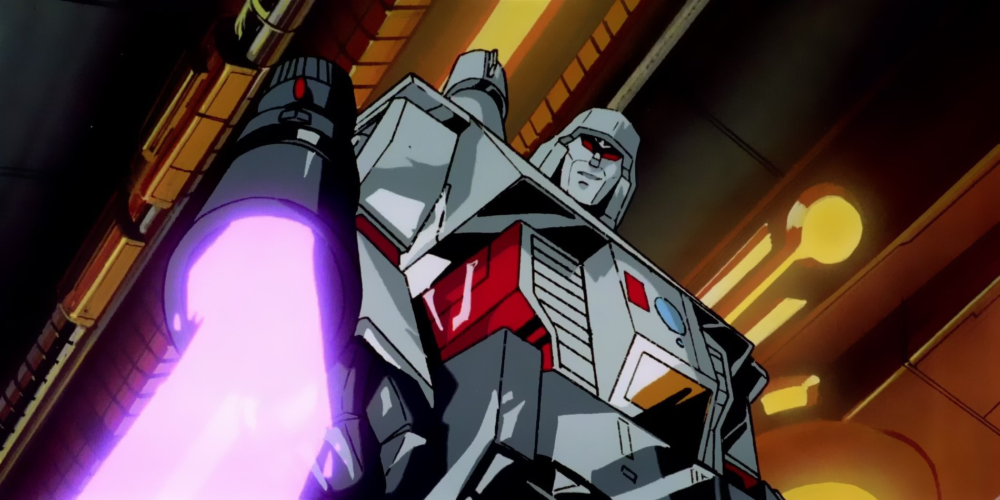

Megatron G1 (Generation One)(1984)

Kreskówki Sunbow:
Megatron jest przedstawiany jako drobny terrorysta i mógłby być
dyktatorem. W przeciwieństwie do wielu innych wcieleń tej postaci,
Megatron nie ma sympatycznej historii ani skomplikowanych motywacji,
generalnie pragnąc władzy tylko dla siebie. Absurdalne plany Megatrona,
takie jak wykorzystanie Soundwave'a jako DJ-a do prania mózgów ludziom lub
użycie zmienionego materiału wideo, aby przekonać ludzi, że Decepticony są
dobre, a Autoboty są złe, często sprawiają, że Megatron staje się błaznem.
Pomimo tego Megatron jest niesamowicie bezwzględny; zabija bezbronnych
cywilów, w tym Oriona Paxa w War Dawn, poddaje praniu mózgu pokojowych
architektów i wysadza w powietrze pokojowe miasto, a także rozstrzeliwuje
rannych Autobotów w Transformers: The Movie. Megatron często używał
podstępnych taktyk, aby wygrać, takich jak łamanie danego słowa, aby
walczyć uczciwie w pojedynku jeden na jednego z Optimusem, oszukując
poprzez przejęcie mocy innych Decepticonów dla siebie lub udając, że błaga
Optimusa Prime'a o litość, potajemnie sięgając po pistolet, by dokonać
niespodziewanego strzału. Jednak jego zło było ograniczone. Ponieważ
Megatron chce rządzić, a nie niszczyć, sprzeciwił się planowi Unicrona,
jakim było zniszczenie Cybertronu w filmie i tymczasowo połączył siły z
Optimusem, aby zapobiec zniszczeniu Ziemi, ponieważ zniszczenie planety
oznaczałoby zniszczenie cennych zasobów Ziemi i samego siebie. Megatron
patrzy z góry na większość swoich żołnierzy, ale ma coś w rodzaju
przyjaźni z Soundwavem i Shockwavem.
Komiksy:
Megatron jest przedstawiany jako szalony, terrorystyczny przywódca w
komiksach Marvela, który rozpoczął wojnę, ponieważ miał dość pokoju na
Cybertronie. Podczas gdy Megatron nie ma nic poza nienawiścią do Optimusa,
ma niechętny szacunek do swojego drugiego arcywroga, Ratcheta, i próbował
skłonić go do przejścia na swoją stronę.